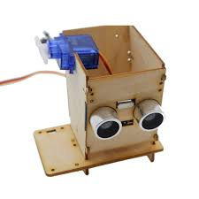

Gestion de Stock
Application PHP pour les boutiquiers locaux, permettant de gérer l'inventaire et les ventes en temps réel.
"Conception d'une application complète pour la gestion de l'inventaire d'un commerce de proximité.
Ce projet inclut la modélisation de la base de données via la méthode Merise, l'implémentation d'une interface CRUD en PHP et la sécurisation des accès utilisateurs.
Résultat : une réduction des erreurs de stock de 30%."
Langage C
MySQL

Poubelle Intelligente
Système IoT avec capteur ultrasonique pour l'ouverture automatique et ESP32 pour le suivi à distance.
Projet IoT visant à optimiser la gestion des déchets urbains.
Utilisation d'un capteur à ultrasons pour mesurer le niveau de remplissage en temps réel et d'un servomoteur pour l'ouverture sans contact.
Les données sont transmises via un module ESP32 vers un serveur local pour monitoring. Focus : Hygiène et automatisation."
ESP32
C++

Système RFID
Dispositif d'ouverture de porte sécurisée par lecture de badge, programmé sur microcontrôleur Arduino.
Développement d'un prototype de contrôle d'accès sécurisé.
Le système compare l'UID du badge scanné avec une base de données interne sur Arduino.
En cas de correspondance, le verrouillage magnétique est libéré. Compétences : Programmation C++, câblage hardware et logique de sécurité
Arduino
C++